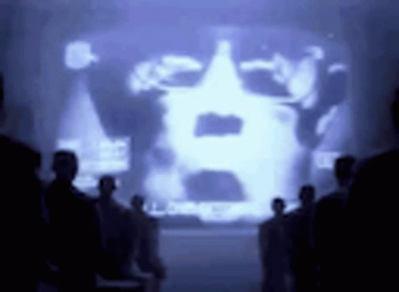

what is this?
this website lets you bypass roblox's
image moderation system by manually
reconstructing an image using individual
pixels.
many other similar tools that do this
exist, but this one is different, as it
uses
rectangle packing to reconstruct
the image inside of roblox, which heavily
reduces the amount of pixels needed and
greatly increases performance in-game.
to use this, upload an image under settings,
then use the threshold slider to adjust the
quality of the image. a block count of ~5,000
usually works fine for me.
once done, click the export button and
download the
.rbxmx file. import it into
roblox and you should be done!
do note that some images just don't work,
just try taking a screenshot of the image
and using that.
please note this is purely for educational
and research purposes, and i am not
responsible for any misuse of this website.
(do not generate porn! )
the source code is on
github! please
give the repo a 🌟 if you find this useful